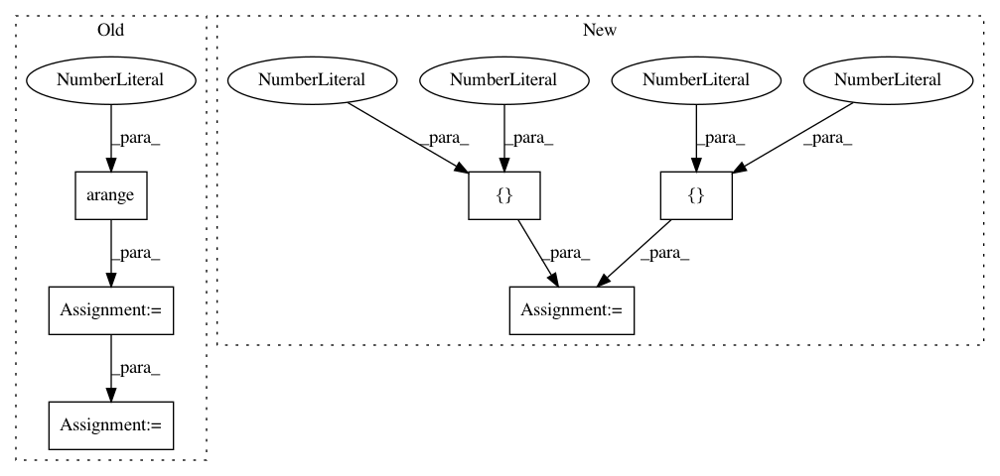

1401e8bd2bdbccbedb696bd742e4934d5ba96fcb,tests/test_clustersupervisor.py,,,#,9
Before Change
pytest.skip("Clustersupervisor is currently broken.", allow_module_level=True)
TEST_DF = pd.DataFrame(np.meshgrid(np.arange(20), np.arange(20))[0])
TEST_SERIES = pd.Series(np.arange(20))
TEST_ARRAY = np.arange(20)
TEST_LIST = list(range(20))
TEST_CLUSTERS = np.array(([1] * 10) + ([2] * 10))
TEST_LABELS_STR = {"1.2", "2.2"}
TEST_LABELS_NUM = {1.2, 2.2}
TEST_LABELS_CHAR = {"hello1", "hello2"}
data_opts = [TEST_DF, TEST_SERIES, TEST_ARRAY, TEST_LIST]
label_opts = [TEST_LABELS_NUM, TEST_LABELS_STR, TEST_LABELS_CHAR]
@pytest.mark.parametrize(
After Change
from superintendent import ClusterSupervisor
TEST_ARRAY = np.array([[1, 2, 3], [1, 2, 3], [1, 2, 3], [1, 2, 3]])
TEST_LABELS = np.array([1, 1, 2, 2])
TEST_REPRESENTATIVENESS = np.array([0.5, 0.4, 0.6, 0.9])
In pattern: SUPERPATTERN
Frequency: 4
Non-data size: 6
Instances
Project Name: janfreyberg/superintendent
Commit Name: 1401e8bd2bdbccbedb696bd742e4934d5ba96fcb
Time: 2018-10-31
Author: janfreyberg@users.noreply.github.com
File Name: tests/test_clustersupervisor.py
Class Name:
Method Name:
Project Name: cornellius-gp/gpytorch
Commit Name: 979b8c9efa551e8c948a4aca145367a2d87ac8d6
Time: 2019-02-26
Author: balandat@fb.com
File Name: test/distributions/test_multitask_multivariate_normal.py
Class Name: TestMultiTaskMultivariateNormal
Method Name: test_multivariate_normal_batch_correlated_sampels
Project Name: cornellius-gp/gpytorch
Commit Name: 979b8c9efa551e8c948a4aca145367a2d87ac8d6
Time: 2019-02-26
Author: balandat@fb.com
File Name: test/distributions/test_multitask_multivariate_normal.py
Class Name: TestMultiTaskMultivariateNormal
Method Name: test_multivariate_normal_correlated_sampels
Project Name: freelunchtheorem/Conditional_Density_Estimation
Commit Name: 6fbef6a3631d94991ab02a9f7411e3b6fd954dfc
Time: 2019-01-12
Author: jonas.rothfuss@gmx.de
File Name: tests/unittests_estimators.py
Class Name: TestConditionalDensityEstimators_2d_gaussian
Method Name: test_NKDE_with_2d_gaussian